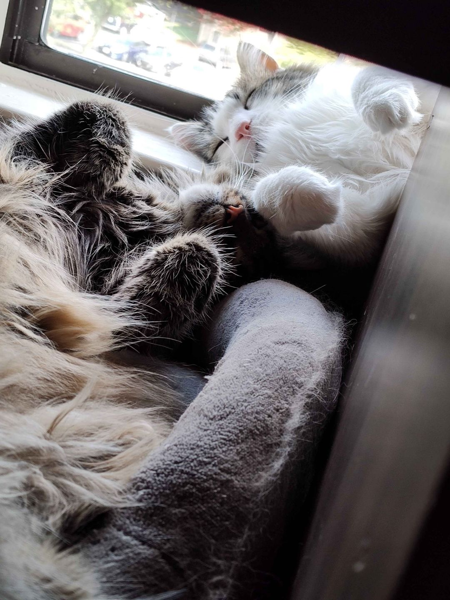

Our Story
Samantha's passion for cats inspired the creation of this website. Learn more about her background, her love for her feline friends, and the journey that led to the creation of this pet project.
One of the most moving chapters of this project is the rescue story of two special cats—brother and sister who faced a tough start in life. Their tails needed amputation for unknown reasons, leaving them with unique half nubs that now stand as symbols of their resilience.
Sam adopted these cats with the hope of giving them a better life, and in return, they have filled her world with joy and meaning. Their story is a powerful reminder that saving a life not only transforms the animal's future, but also enriches the lives of those who care for them.
Samantha's Cat Project is all about demonstrating how taking proper care of cats—using modern tools and heartfelt attention—can lead to an amazing, rewarding life. Every rescued pet has the potential to change lives, and in saving them, Sam has discovered a deep, fulfilling purpose.
The mission of Samantha's Cat Project is to show the world that caring for cats is not only about ensuring their wellbeing, but also about nurturing your own happiness. By embracing the love and responsibility of pet care, you find that the joy, companionship, and unconditional love from cats can truly take care of you.